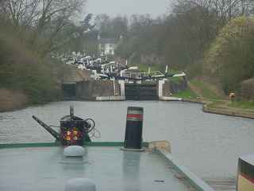
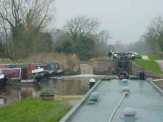
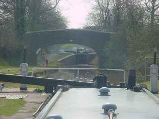
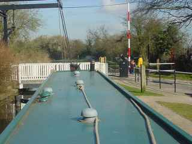
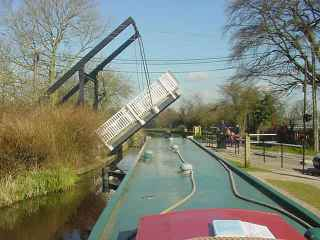
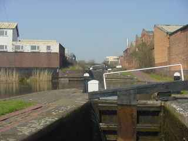
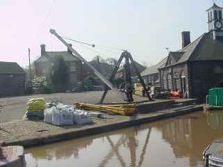
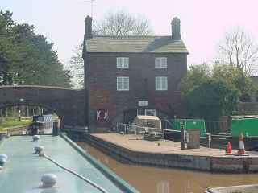
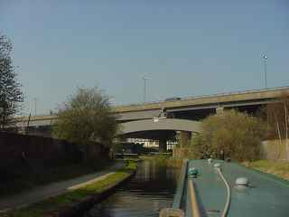
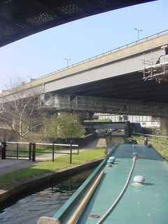

A selection of pictures from our trip around Warwickshire Ring.
The exciting view of the Hatton flight on the Grand Union.
Boats moored in a pond up the North Stratford flight of locks.
North Stratford..
A lift bridge on the North Stratford..
An open lift bridge on the North Stratford.
A flight of locks in the industrial area of Aston, Birmingham.
Hartshill BW Yard on the Coventry Canal.
Hartshill BW Yard on the Coventry Canal.
Spaghetti Junction.
Spaghetti Junction.
